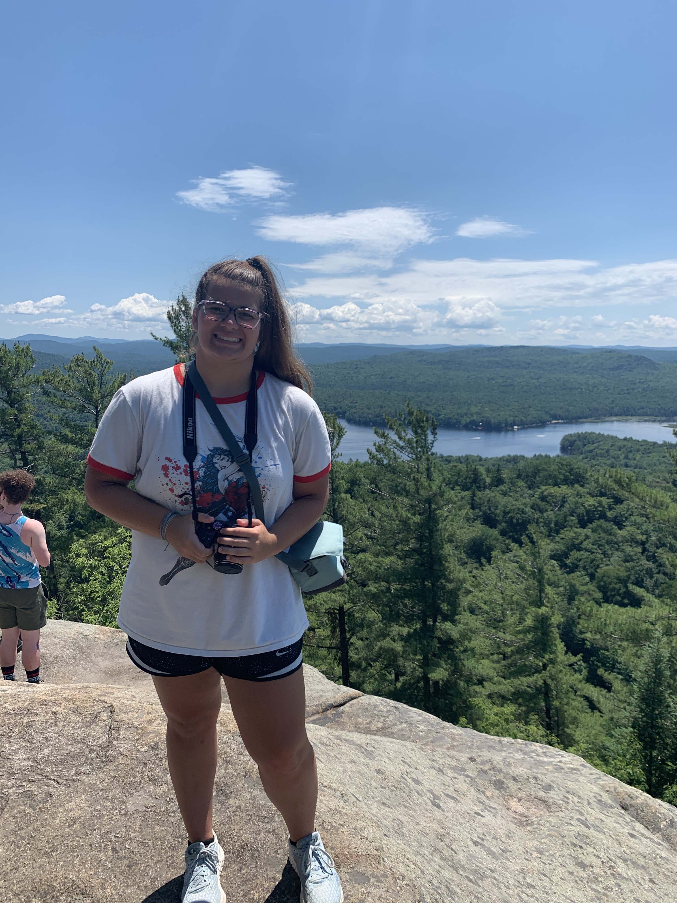
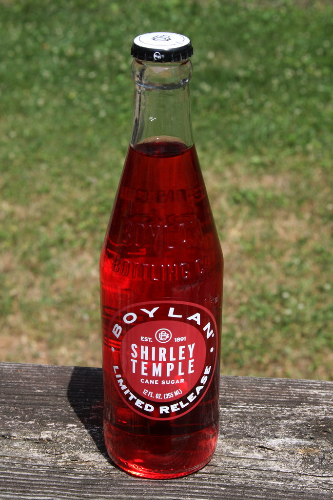
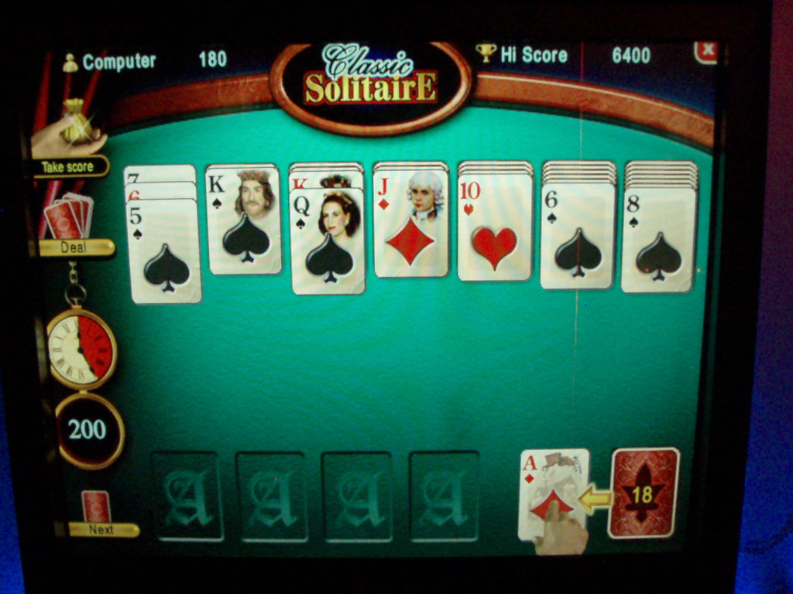
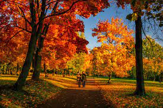

Hello my name is Brooke!
This is my webpage about me and the things I enjoy doing in my spare time!
Biography
I am a Junior in high school! As a part of my school I am in a academy for Information Technology!I am intrested in a career in cyber security after high school.My family Includes my mom Susan, my dad Bill, my sister Cassandra,who is fifteen months older then me, then me Brooke the youngest!
Some of my hobbies included photography, biking and swimming. I have always been intrested in taking pictures of the world around me and one day hope to travel the world and visit new places. I really enjoy to go on long bike rides and enjoy listening to music while pedaling away. I have also been a competitive swimmer for around ten years and swim both for a club team and my school team.
My Favorite Quotation
“I have not failed. I've just found 10,000 ways that won't work.” ― Thomas A. Edison
My Favorite Foods
- Pizza
- Mac & Cheese
- Chicken Tenders
- Chicken Pot Pie
- Butter Noodles
My Top Five Favorite Movies
- Wonder
- The Little Mermaid
- Encanto
- Luca
- Curela
Countries I'd Like to visit, and What I'd Like to do There
- Italy
- Visit My family and explore the traditions
- Ireland
- Go there on St. Patricks day and see the landscape
- Norway
- To see where the Idea of Frozen came from
Other Favorite Things
| Favorite Drink | Shirley Temple |  |
|---|---|---|
| Favorite Card Game | Solitare |  |
| Favorite Color | Purple |  |
| Favorite Season | Fall |  |
| Favorite Holiday | Halloween |  |
| Favorite Animal | Alpaca | .jpg) |
Contact Information
Email:brookedreamweaver@email.com
Phone: 123-456-7890